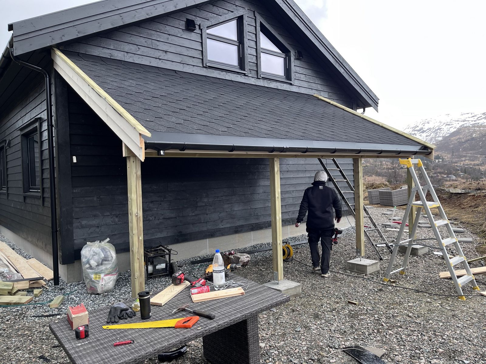
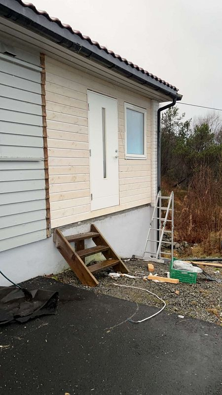
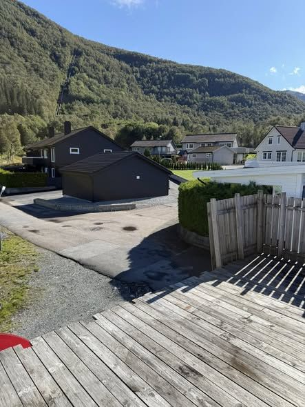
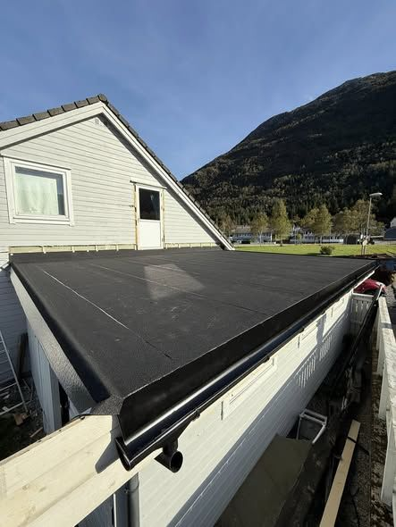
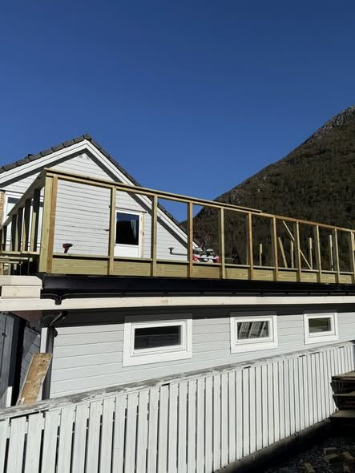

Praktiske oppdrag som vindusbytte, dører og fasadereparasjoner.

ARNA · BERGEN · SMÅ TØMRERJOBBER
Godt håndverk, gjort
enkelt.
Helgesen Bygg hjelper deg med små og mellomstore tømrerjobber – fra dører og vinduer til kledning, fasade og renovering.
01 / 05Ferdig arbeid · Garnes
LOKAL TØMRER I BERGEN
En trygg håndverker for de
viktige detaljene.
Med over fem års erfaring og base i Arna tar Fredrik Helgesen på seg små tømrerjobber i Bergen og omegn. Målet er enkelt: presist arbeid, ryddig kommunikasjon og en jobb som holder.
Bli kjent med Helgesen Bygg ↗Du snakker direkte med den som gjør jobben.
Forankret i Arna, med oppdrag i Bergen og omegn.
En tydelig plan fra første prat til ferdig arbeid.
02
Tjenester
Det som skal
bli bedre.
Ikke alle jobber trenger å være store. De trenger å bli gjort ordentlig.
03
Utvalgte arbeider
Arbeid som
tåler å bli sett.
Et lite utvalg fra prosjekter i Arna, Garnes og resten av Bergen.




04
Slik jobber vi
En enkel vei
til et godt resultat.
Fortell litt om jobben du ønsker å få gjort.
Vi ser på løsningen sammen.
En tydelig plan før vi starter.
Ryddig avslutning. Et resultat som holder.
05 · TA KONTAKT
Har du et prosjekt
i tankene?
Send noen ord om hva du ønsker å få gjort. Eller ring direkte – det er ofte enklest.
ÅpningstiderMandag–fredag 16:00–20:00Lørdag–søndag 12:00–20:00